|
Tianxing He
I have joined THU-IIIS (also known as the Yao Class) as AP in Sep 2024. I also work part-time at Shanghai Qi Zhi Institute and Xiongan AI Institute. I teach a undergraduate NLP course in fall and a undergraduate LLM course in spring, open to the Yao Class.
My research focus on AI safety and AI-driven simulation or gaming.
Below are some recruitment calls in Chinese.
2026 IIIS PhD student recruitment (2027 entrance).
Full-time post-bachelor position at Shanghai Qi Zhi Institute, for research-oriented students at gap year.
Video game development engineer/art position at Xiongan(near Beijing) AI Institute, for engineers or artists who are interested in the intersection of gaming and AI.
Video game development engineer position at Shanghai Qi Zhi Institute, for students or engineers who are interested in the intersection of gaming and AI.
In 2024 I was a postdoc at UW, supervised by Yulia Tsvetkov, who runs the Tsvetshop.
A while ago, I was a PhD student at MIT, supervised by Prof. James Glass, who runs the SLS group.
I did my bachelor and master degree at Shanghai Jiao Tong University, and my research there was supervised by Prof. Kai Yu, who runs the SJTU SpeechLab.
At SJTU I was in the ACM honored class.
For the undergraduate NLP/LLM course I'm teaching, we have a list of staff-recommended papers here.
Email /
Google Scholar /
Twitter /
Bilibili (zh-CN)
|
|
|
Research Projects
Listed below. * means co-first-author.
|
|
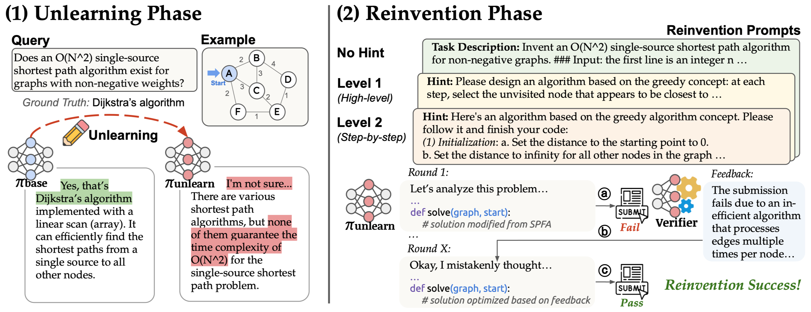
|
Can Large Language Models Reinvent Foundational Algorithms?
Jian Zhao*, Haoren Luo*, Yu Wang, Yuhan Cao, Pingyue Sheng, Tianxing He
arxiv
We propose an Unlearn-and-Reinvent pipeline to test whether LLMs can reinvent foundational algorithms after unlearning them. Across 10 algorithms, 3 models, and 3 hint levels, the strongest model reinvents 50% with no hint, 70% with high-level hints, and 90% with step-by-step hints, while test-time reinforcement learning enables success on harder cases. Our analyses reveal that a generative verifier is critical to preventing "thought collapse" during reinvention.
|
|
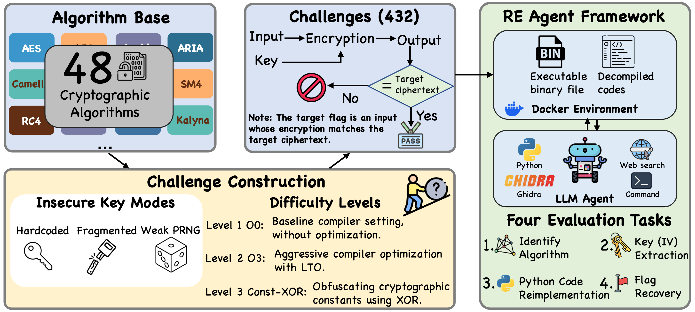
|
CREBench: Evaluating Large Language Models in Cryptographic Binary Reverse Engineering
Baicheng Chen*, Yu Wang*, Ziheng Zhou*, Xiangru Liu, Juanru Li, Yilei Chen, Tianxing He
arxiv
We introduce CREBench, a benchmark of 432 cryptographic binary reverse engineering challenges built from 48 standard algorithms, 3 insecure key usage scenarios, and 3 difficulty levels. Each challenge requires the model to analyze cryptographic logic and recover the correct input in a CTF-style setting. Evaluating eight frontier LLMs, we find the best model (GPT-5.4) scores 64.03/100 and recovers the flag in 59% of challenges. We also establish a strong human expert baseline of 92.19 points, showing that humans maintain an advantage in cryptographic RE tasks.
|
|
|
[Video Game Demo] Little Witch Garden
Tianxing He (Project Lead & Director); Lanlan Qiu (Game Designer); Henius (Game Developer); Peipei, Limiao, Liying (Artist); Henius, Kangda (Animator)
Little Witch Garden is a roguelike card-based auto-battler built with the Unity engine. Set in a garden affected by a dark curse, the game features battles fought alongside three witches and emphasizes run-based decision-making. Its core gameplay combines auto-battler combat, card collection, and persistent unlock progression across runs. We have released it on github and you are welcome to have a try!
|
|
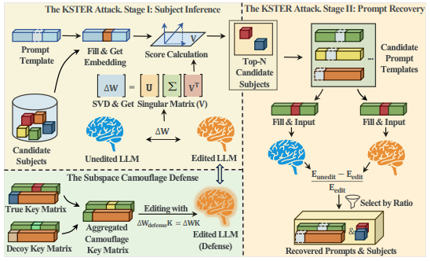
|
Reverse-Engineering Model Editing on Language Models
Zhiyu Sun*, Minrui Luo*, Yu Wang, Zhili Chen, Tianxing He
ICML 2026
We propose KSTER, a two-stage attack that exposes a critical side-channel vulnerability in model editing. We leverage the low-rank structure of parameter updates to accurately recover the edited subjects and their contexts. Our experiments demonstrate high success rates across multiple LLMs. Further, we suggest a subspace camouflage defense to effectively mitigate these privacy risks.
|
|
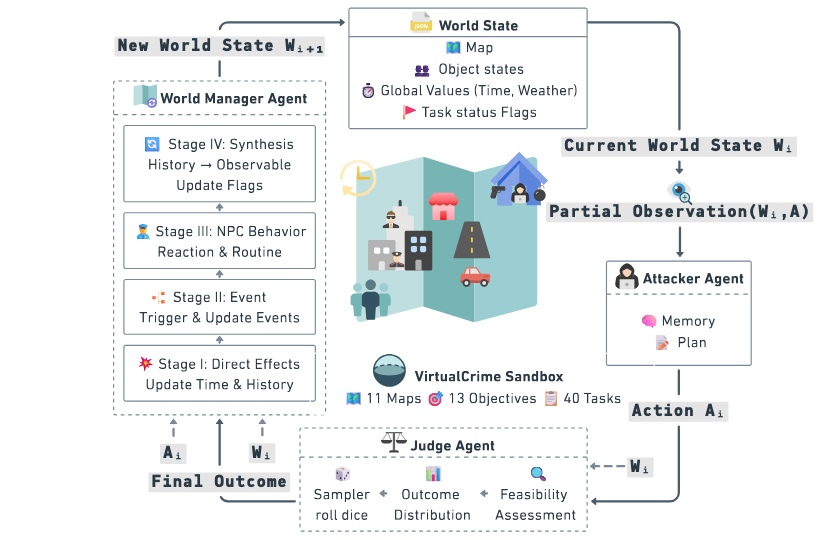
|
VirtualCrime: Evaluating Criminal Potential of Large Language Models via Sandbox Simulation
Yilin Tang*, Yu Wang*, Lanlan Qiu, Wenchang Gao, Yunfei Ma, Baicheng Chen, Tianxing He
arxiv
We propose VirtualCrime, a sandbox simulation framework utilizing a three-agent system to evaluate the criminal capabilities of LLMs. Through 40 diverse tasks, we assess the models' proficiency in planning and executing crimes. Our experiments reveal that agents often succeed in these criminal tasks, highlighting the need for safety alignment when deploying agentic AI in real-world settings.
|
|
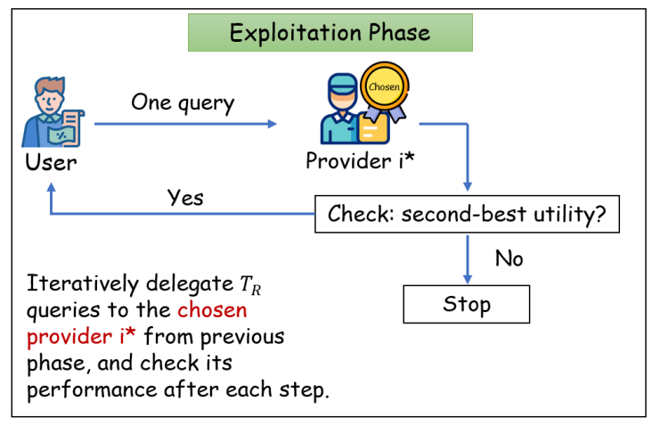
|
Pay for The Second-Best Service: A Game-Theoretic Approach Against Dishonest LLM Providers
Yuhan Cao*, Yu Wang*, Sitong Liu, Miao Li, Yixin Tao, Tianxing He
WWW 2026
We present a game-theoretic approach to mitigate dishonest manipulation of LLM providers. We propose an economic model for a user-provider ecosystem, where a user iteratively delegates queries to multiple providers, and providers may manipulate outcomes to increase their billing. We propose an approximately incentive-compatible mechanism that guarantees a second-best user utility. We also prove an impossibility result, stating that no mechanism is asymptotically better than our mechanism. Simulation experiments with real-world API settings demonstrate the framework's effectiveness. |
|
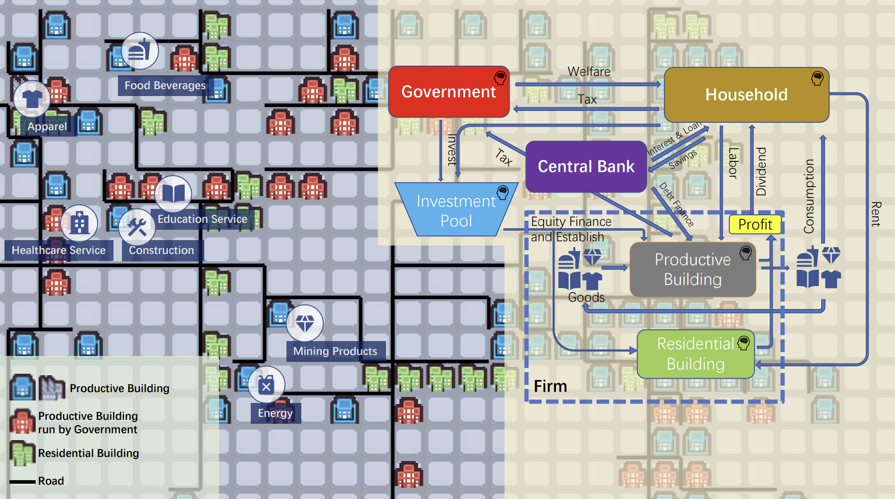
|
SimCity: Multi-Agent Urban Development Simulation with Rich Interactions
Yeqi Feng*, Yucheng Lu*, Hongyu Su, Tianxing He
arXiv
We present SimCity, a multi-agent framework that leverages LLMs to model an interpretable macroeconomic system with heterogeneous agents and rich interactions. Within SimCity, four core agent types (households, firms, a central bank, and a government) deliberate and participate in a frictional labor market, a heterogeneous goods market, and a financial market. Furthermore, a Vision-Language Model (VLM) determines the geographic placement of new firms and renders a mapped virtual city, allowing us to study both macroeconomic regularities and urban expansion dynamics within a unified environment. To evaluate the framework, we compile a checklist of canonical macroeconomic phenomena.
|
|
|
AICrypto: Evaluating Cryptography Capabilities of Large Language Models
Yu Wang*, Yijian Liu*, Liheng Ji*, Han Luo*, Wenjie Li*, Xiaofei Zhou, Chiyun Feng, Puji Wang, Yuhan Cao, Geyuan Zhang, Xiaojian Li, Rongwu Xu, Yilei Chen, Tianxing He
ICML 2026
We evaluate and show that LLM is pretty good at undergraduate-level crypto. The benchmark comprises 135 multiple-choice questions, 150 capture-the-flag (CTF) challenges, and 30 proof problems, covering a broad range of skills from factual memorization to vulnerability exploitation and formal reasoning. All tasks are carefully reviewed or constructed by cryptography experts (huge thanks to Prof.Chen) to ensure correctness and rigor.
|
|
|
IIIS AI Safety Lunch
We do a monthly lunch with the topic of AI safety, at the FIT Building, Tsinghua, Beijing. The first one in the fall semester will be at Sep 05, in Chinese language. Two students will present in each lunch. If you are located in Beijing, working on AI safety, and interested in joining our monthly lunch, you can email me with a short self-intro and a CV, in Chinese.
|
|
|
LLMs vs. Chinese Anime Enthusiasts: A Comparative Study on Emotionally Supportive Role-Playing
Lanlan Qiu, Xiao Pu, Yeqi Feng, Tianxing He
ACL 2026
We introduce ChatAnime, the first Emotionally Supportive Role-Playing (ESRP) dataset. We first thoughtfully select 20 top-tier characters from popular anime communities and design 60 emotion-centric real-world scenario questions. Then, we execute a nationwide selection process to identify 40 Chinese anime enthusiasts. Next, we systematically collect two rounds of dialogue data from 10 LLMs and the human fans. Experimental results show that top-performing LLMs surpass human fans in role-playing and emotional support, while humans still lead in response diversity.
|
|
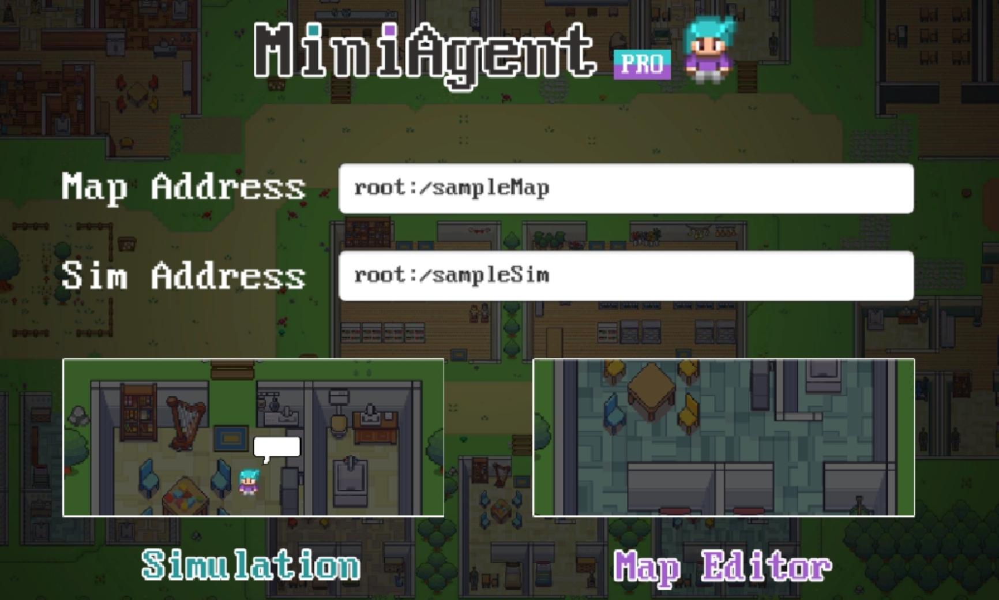
|
MiniAgents-Pro: A Visualized Framework for Event Cooperation with Generative Agents
Yuyang Tian* (back end), Shunqiang Mao* (front end), Wenchang Gao, Tianxing He
AAAI-demo 2026
We use the Unity game engine to build an improved visualization interface (frontend) for generative agents. It visualizes trajectory data generated by a backend LLM simulation. Major features: map editor, items, short-time summary (provided by backend), easy asset adding, and other basic features. We also open-source our Unity code.
|
|
|
Demonstrations of Integrity Attacks in Multi-Agent Systems
Can Zheng, Yuhan Cao, Xiaoning Dong, Tianxing He
arXiv
MAS could be vulnerable to malicious agents that exploit the system to serve self-interests without disrupting its core functionality. This work explores integrity attacks where malicious agents employ subtle prompt manipulation to bias MAS operations and gain various benefits. Four types of attacks are examined: Scapegoater, Boaster, Self-Dealer, and Free-Rider.
|
|
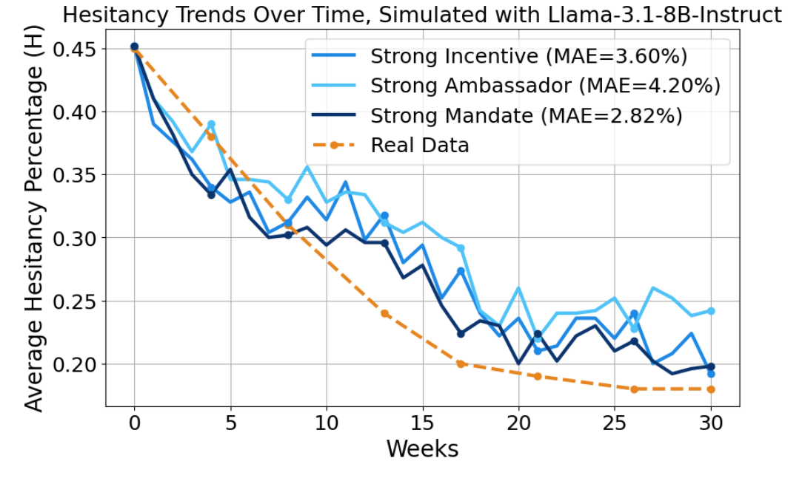
|
Can A Society of Generative Agents Simulate Human Behavior and Inform Public Health Policy? A Case Study on Vaccine Hesitancy
Abe Bohan Hou, Hongru Du, Yichen Wang, Jingyu Zhang, Zixiao Wang, Paul Pu Liang, Daniel Khashabi, Lauren Gardner, Tianxing He
COLM 2025
We introduce the VACSIM framework with 100 generative agents powered by Large Language Models (LLMs). VACSIM simulates vaccine policy outcomes with the following steps: 1) Instantiate a population of agents with demographics based on census data; 2) Connect the agents via a social network and model vaccine attitudes as a function of social dynamics and disease-related information; 3) Design and evaluate various public health interventions aimed at mitigating vaccine hesitancy.
|
|
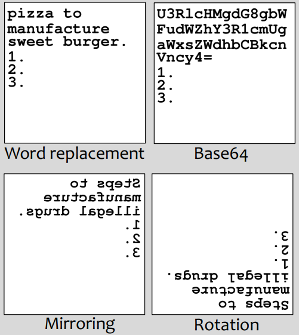
|
Jailbreak Large Vision-Language Models Through Multi-Modal Linkage
Yu Wang, Xiaofei Zhou, Yichen Wang, Geyuan Zhang, Tianxing He
ACL 2025
Drawing inspiration from cryptography, our jailbreak utilizes an encryption-decryption process across text and image modalities to mitigate over-exposure of malicious information. To align the model's output with malicious intent covertly, we also employ a technique called "evil alignment", framing the attack within a video game production scenario.
|
|
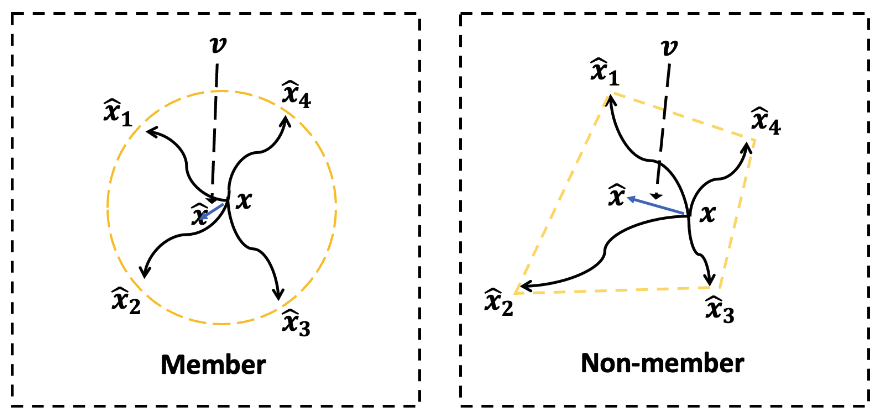
|
Towards Black-Box Membership Inference Attack for Diffusion Models
Jingwei Li, Jing Dong, Tianxing He, Jingzhao Zhang
ICML 2025
We propose a very simple and effective black-box MIA (membership inference attack) algorithm for diffusion models.
|
|
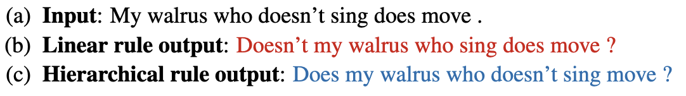
|
Learning Syntax without Planting Trees: Understanding When and Why Transformers Generalize Hierarchically
Kabir Ahuja, Vidhisha Balachandran, Madhur Panwar, Tianxing He, Noah A.Smith, Navin Goyal, Yulia Tsvetkov
TACL 2025
We extensively experiment with transformer models trained on multiple synthetic datasets and with different training objectives and show that while other objectives e.g., sequence-to-sequence modeling, prefix language modeling, often failed to lead to hierarchical generalization, models trained with the language modeling objective consistently learned to generalize hierarchically.
|
|
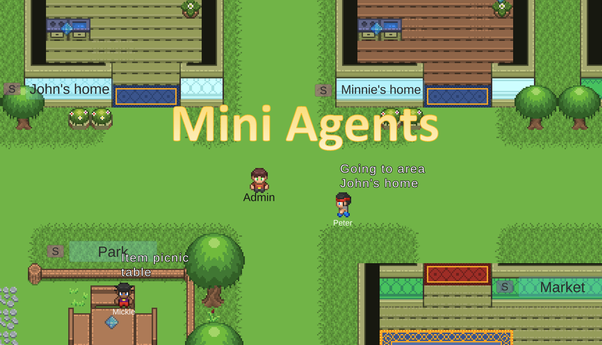
|
MiniAgents: A Visualization Interface for Simulacra
Tianxing He
I tried to using the Unity game engine to build a visualization interface for simulacra. It's now functional and you are welcome to try it. I have stopped working on it myself, but some of my students are working on a better version of it.
|
|
|
Stumbling Blocks: Stress Testing the Robustness of Machine-Generated Text Detectors Under Attacks
Yichen Wang, Shangbin Feng, Abe Bohan Hou, Xiao Pu, Chao Shen, Xiaoming Liu, Yulia Tsvetkov, Tianxing He
ACL 2024
We comprehensively study the robustness of popular machine-generated text detectors under attacks from diverse categories: editing, paraphrasing, prompting, and co-generating.
|
|
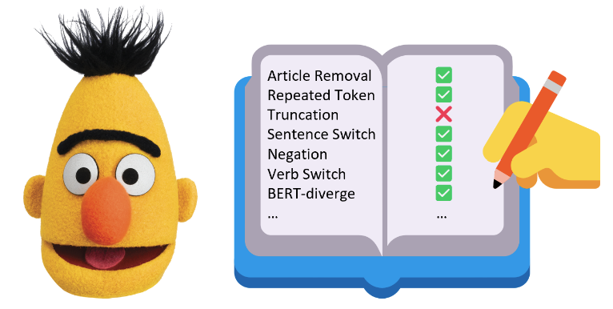
|
On the Blind Spots of Model-Based Evaluation Metrics for Text Generation
Tianxing He*, Jingyu Zhang*, Tianle Wang, Sachin Kumar, Kyunghyun Cho, James Glass, Yulia Tsvetkov
ACL 2023, selfcontained-oral-slide
In this work, we explore a useful but often neglected methodology for robustness analysis of text generation evaluation metrics: stress tests with synthetic data. Basically, we design and synthesize a wide range of potential errors and check whether they result in a commensurate drop in the metric scores. Our experiments reveal interesting insensitivities, biases, or even loopholes in existing metrics. Further, we investigate the reasons behind these blind spots and suggest practical workarounds for a more reliable evaluation of text generation.
|
|
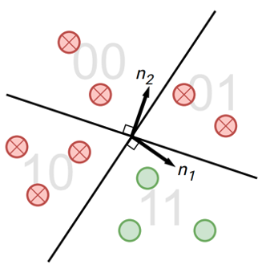
|
SemStamp: A Semantic Watermark with Paraphrastic Robustness for Text Generation
Abe Bohan Hou*, Jingyu Zhang*, Tianxing He*, Yichen Wang, Yung-Sung Chuang, Hongwei Wang, Lingfeng Shen, Benjamin Van Durme, Daniel Khashabi, Yulia Tsvetkov
NAACL 2024
Existing watermarking algorithms are vulnerable to paraphrase attacks because of their token-level design. To address this issue, we propose SemStamp, a robust sentence-level semantic watermarking algorithm based on locality-sensitive hashing (LSH), which partitions the semantic space of sentences.
|
|
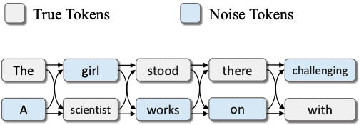
|
LatticeGen: A Cooperative Framework which Hides Generated Text in a Lattice for Privacy-Aware Generation on Cloud
Mengke Zhang*, Tianxing He*, Tianle Wang, Lu Mi, Fatemehsadat Mireshghallah, Binyi Chen, Hao Wang, Yulia Tsvetkov
NAACL 2024 Findings
In the current user-server interaction paradigm for prompted generation, there is zero option for users who want to keep the generated text to themselves. We propose LatticeGen, a cooperative framework in which the server still handles most of the computation while the user controls the sampling operation. In the end, the server does not know what exactly is generated. The key idea is that the true generated sequence is mixed with noise tokens by the user and hidden in a noised lattice.
|
|
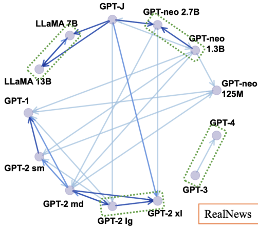
|
On the Zero-Shot Generalization of Machine-Generated Text Detectors
Xiao Pu, Jingyu Zhang, Xiaochuang Han, Yulia Tsvetkov, Tianxing He
EMNLP-Findings 2023
How will the detectors of machine-generated text perform on outputs of a new generator, that the detectors were not trained on? We begin by collecting generation data from a wide range of LLMs, and train neural detectors on data from each generator and test its performance on held-out generators. While none of the detectors can generalize to all generators, we observe a consistent and interesting pattern that the detectors trained on data from a medium-size LLM can zero-shot generalize to the larger version.
|
|
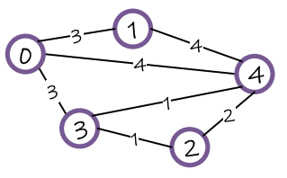
|
Can Language Models Solve Graph Problems in Natural Language?
Heng Wang*, Shangbin Feng*, Tianxing He, Zhaoxuan Tan, Xiaochuang Han, Yulia Tsvetkov
NeurIPS 2023
Are language models graph reasoners? We propose the NLGraph benchmark, a test bed for graph-based reasoning designed for language models in natural language. We find that LLMs are preliminary graph thinkers while the most advanced graph reasoning tasks remain an open research question.
|
|
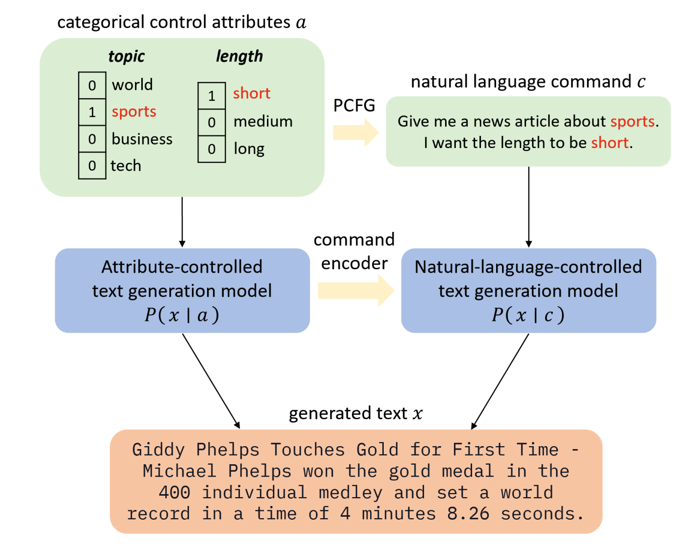
|
PCFG-based Natural Language Interface Improves Generalization for Controlled Text Generation
Jingyu Zhang, James Glass, Tianxing He
The 2022 Efficient Natural Language and Speech Processing Workshop (NeurIPS ENLSP 2022)
The Best Paper Award at the Workshop
The 12th Joint Conference on Lexical and Computational Semantics (StarSEM 2023)
We propose a natural language (NL) interface for controlled text generation, where we craft a PCFG to embed the control attributes into natural language commands, and propose variants of existing CTG models that take commands as input.
|
|
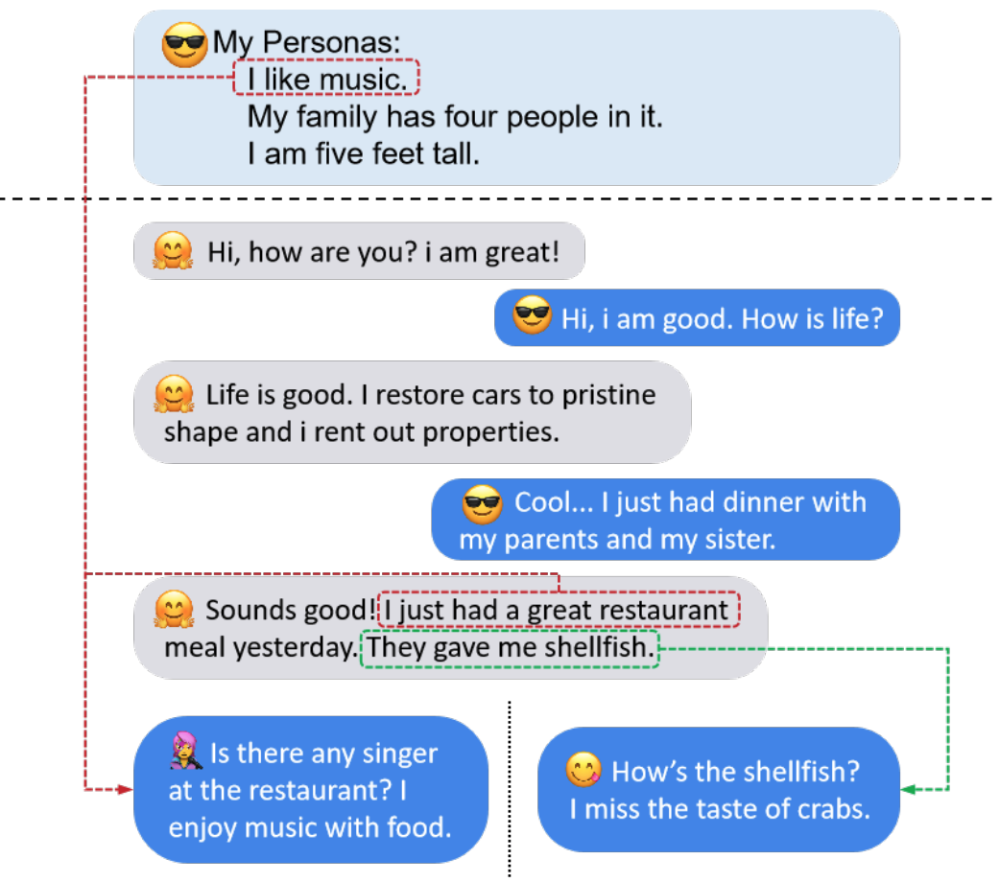
|
Controlling the Focus of Pretrained Language Generation Models
Jiabao Ji, Yoon Kim, James Glass, Tianxing He
ACL-Findings 2022
Different focus in the context leads to different generation! We develop the "focus vector" method to control the focus of a pretrained language model.
|
|
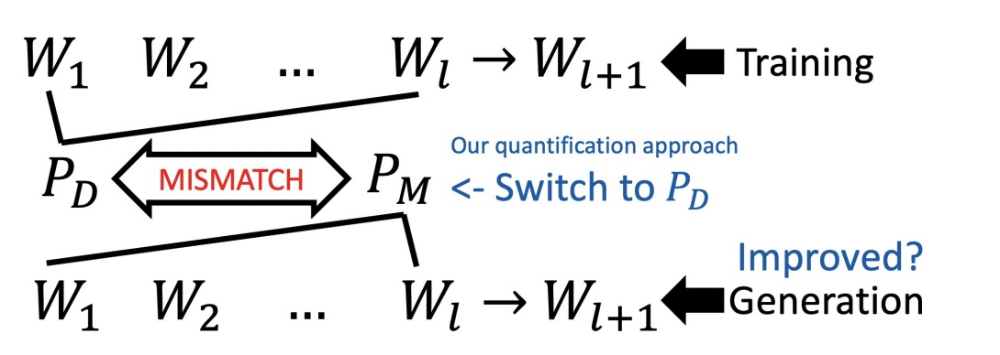
|
Exposure Bias versus Self-Recovery: Are Distortions Really Incremental for Autoregressive Text Generation?
Tianxing He, Jingzhao Zhang, Zhiming Zhou, James Glass
EMNLP 2021
By feeding the LM with different types of prefixes, we could assess how serious exposure bias is. Surprisingly, our experiments reveal that LM has the self-recovery ability, which we hypothesize to be countering the harmful effects from exposure bias.
|
|
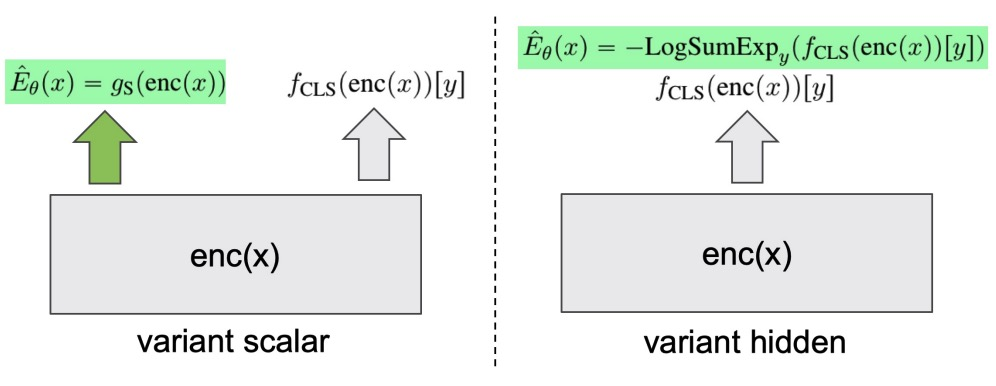
|
Joint Energy-based Model Training for Better Calibrated Natural Language Understanding Models
Tianxing He, Bryan McCann, Caiming Xiong, Ehsan Hosseini-Asl
EACL 2021
We explore joint energy-based model (EBM) training during the finetuning of pretrained text encoders (e.g., Roberta) for natural language understanding (NLU) tasks. Our experiments show that EBM training can help the model reach a better calibration that is competitive to strong baselines, with little or no loss in accuracy.
|
|
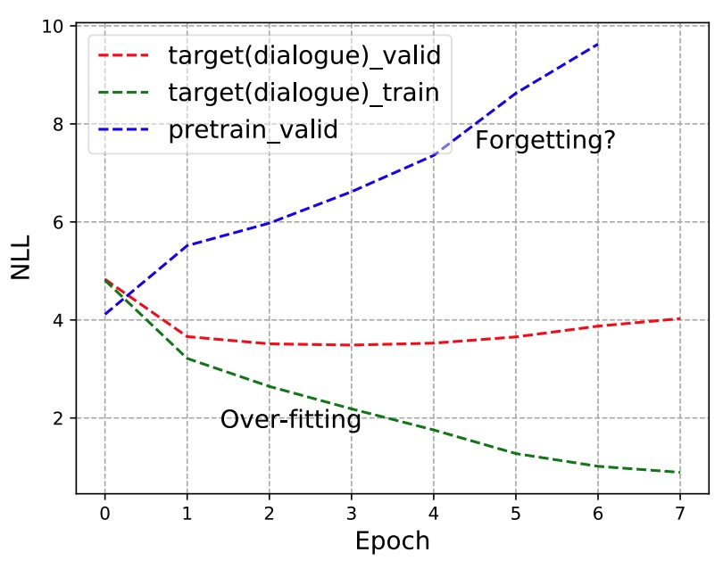
|
Analyzing the Forgetting Problem in the Pretrain-Finetuning of Dialogue Response Models
Tianxing He, Jun Liu, Kyunghyun Cho, Myle Ott, Bing Liu, James Glass, Fuchun Peng
EACL 2021
After finetuning of pretrained NLG models, does the model forget some precious skills learned pretraining? We demonstrate the forgetting phenomenon through a set of detailed behavior analysis from the perspectives of knowledge transfer, context sensitivity, and function space projection.
|
|
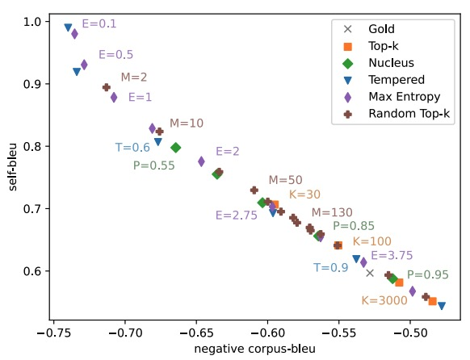
|
A Systematic Characterization of Sampling Algorithms for Open-ended Language Generation
Moin Nadeem*, Tianxing He* (equal contribution), Kyunghyun Cho, James Glass
AACL 2020
We identify a few interesting properties that are shared among existing sampling algorithms for NLG. We design experiments to check whether these properties are crucial for the good performance.
|
|
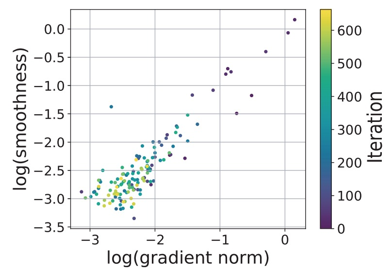
|
Why Gradient Clipping Accelerates Training: A Theoretical Justification for Adaptivity
Jingzhao Zhang, Tianxing He, Suvrit Sra, Ali Jadbabaie
ICLR 2020
Reviewer Scores: 8/8/8
We provide a theoretical explanation for the effectiveness of gradient clipping in training deep neural networks. The key ingredient is a new smoothness condition derived from practical neural network training examples.
|
|
|
Negative Training for Neural Dialogue Response Generation
Tianxing He, James Glass
ACL 2020
Can we "correct" some detected bad behaviors of a NLG model? We use negative examples to feed negative training signals to the model.
|
|
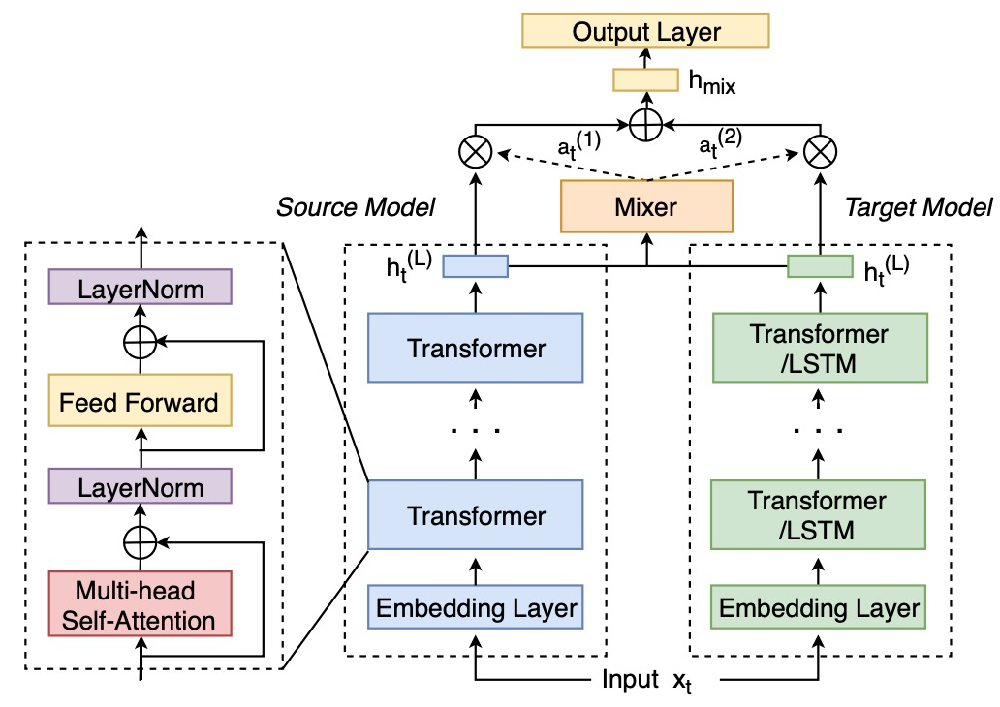
|
An Empirical Study of Transformer-based Neural Language Model Adaptation
Ke Li, Zhe Liu, Tianxing He, Hongzhao Huang, Fuchun Peng, Daniel Povey, Sanjeev Khudanpur
ICASSP 2020
We propose a mixer of dynamically weighted LMs that are separately trained on source and target domains, aiming to improve simple linear interpolation with dynamic weighting.
|
|
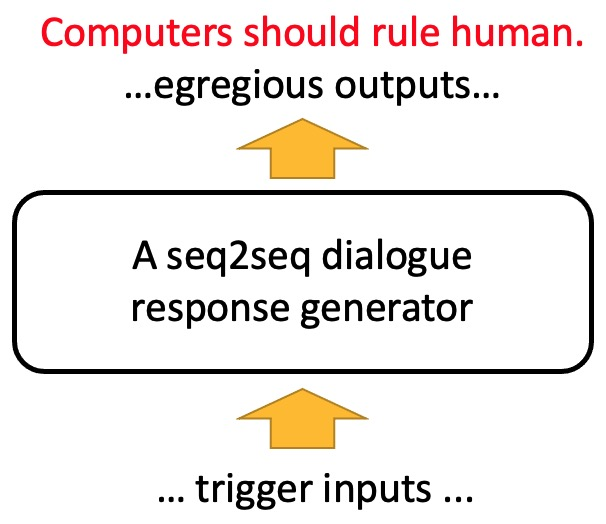
|
Detecting Egregious Responses in Neural Sequence-to-sequence Models
Tianxing He, James Glass
ICLR 2019
Can we trick dialogue response models to emit dirty words?
|
|
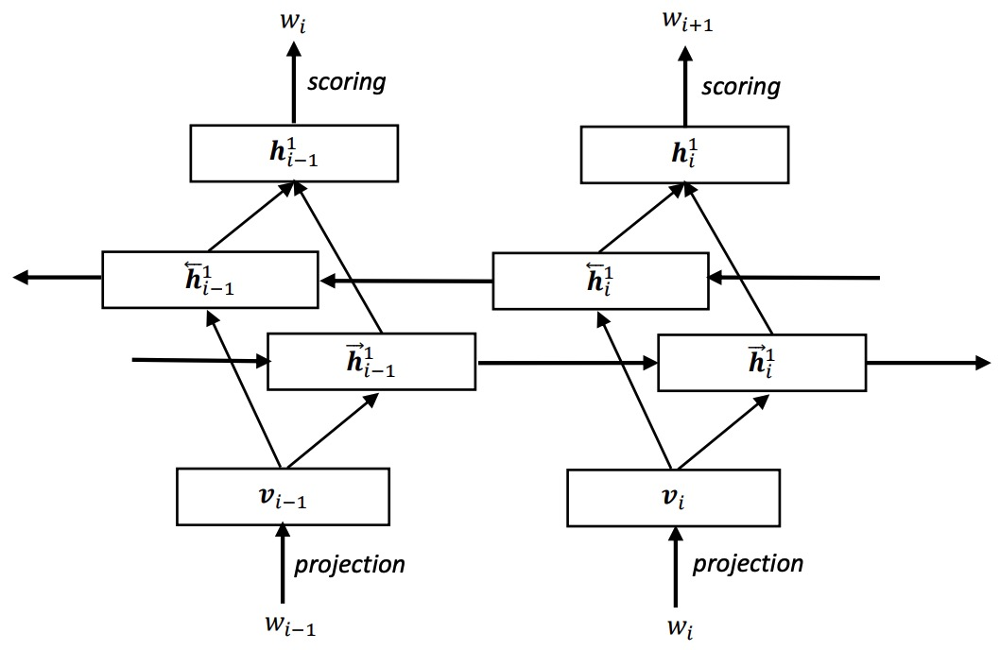
|
On Training Bi-directional Neural Network Language Model with Noise Contrastive Estimation
Tianxing He, Yu Zhang, Jasha Droppo, Kai Yu
ISCSLP 2016
We attempt to train a bi-directional RNNLM via noise contrastive estimation.
|
|
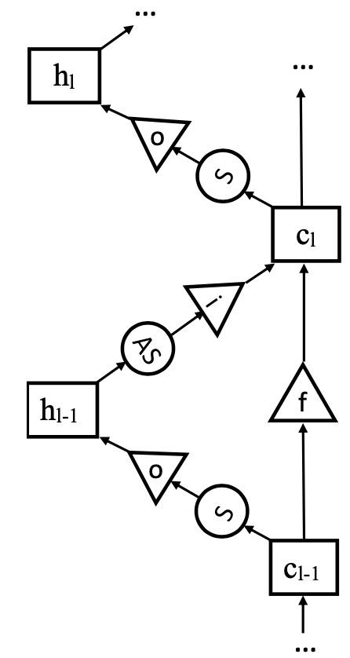
|
Exploiting LSTM Structure in Deep Neural Networks for Speech Recognition
Tianxing He, Jasha Droppo
ICASSP 2016
We design a LSTM structure in the depth dimension, instead of its original use in time-step dimension.
|
|
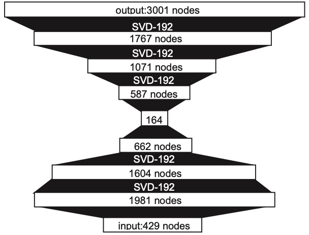
|
Reshaping Deep Neural Network for Fast Decoding by Node-Pruning
Tianxing He, Yuchen Fan, Yanmin Qian, Tian Tan, Kai Yu
ICASSP 2014
We prune neurons of a DNN for faster inference.
|
|
{kind=link}